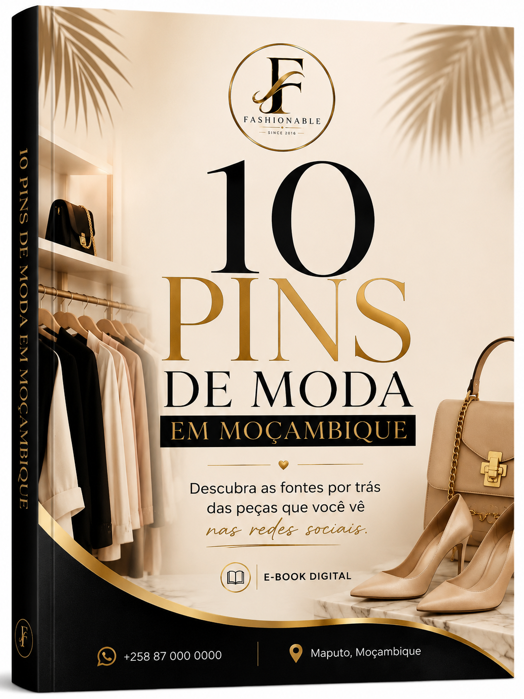

10 PINS DE MODA
Seleção de fontes/contactos de moda para facilitar a sua pesquisa.
Um guia digital pensado para quem quer encontrar fontes de moda em Moçambique, comprar melhor e transformar descobertas em oportunidades de venda.

Nas redes sociais, uma peça bonita chama atenção. Mas quem quer comprar para usar ou revender precisa de uma coisa: a fonte.
Este guia organiza essa procura para você não precisar passar horas a pesquisar.
Você recebe uma pequena ferramenta para encontrar oportunidades, contactar fornecedores e começar a testar o seu próprio negócio de moda.
Seleção de fontes/contactos de moda para facilitar a sua pesquisa.
Um contacto extra para ampliar as suas possibilidades.
Contactos apresentados de forma simples para iniciar a conversa.
Orientações para perguntar por preços, stock, tamanhos, entrega e revenda.
Checklist, mensagens prontas e guia da primeira venda.
Dicas simples para transformar uma boa fonte em oportunidade.
Encontre o fornecedor que combina com o produto que procura.
Use o WhatsApp e pergunte por catálogo, preço, stock e condições.
Comece pequeno, valide o que vende e aprenda com o mercado.
Divulgue, atenda bem e reinvista parte do lucro para crescer.
Um PDF extra com materiais práticos para sair da pesquisa e começar a agir.
Um e-book digital com os PINS/contactos selecionados e orientações práticas, além do Kit Bónus.
Não. É um guia digital direto ao ponto, criado para facilitar a descoberta de fontes e os primeiros passos na revenda.
Não. Você pode começar pelas redes sociais e WhatsApp.
Não. Confirme sempre com o fornecedor os preços, stock, tamanhos, cores e condições antes de comprar.
O produto é digital. Após a confirmação do pagamento, o acesso é disponibilizado pela plataforma de checkout.
Tenha os contactos organizados, use o guia e transforme uma simples descoberta em uma oportunidade.